NOW SHALL I WALK
OR SHALL I RIDE?
"RIDE," PLEASURE SAID;
"WALK" JOY REPLIED.
W.H. DAVIES
Hiking in the mountains means cold nights and changeable days. A wide-brimmed wool hat, Alaskan wool shin, climbing knickers, over-the-knee wool socks and a down parka (kept ready at the top of the pack) should prepare you for any mercury plunging which might occur during a late-spring to early-fall excursion into high country. If you anticipate crossing large or steep snow fields, you'll find an ice axe handy for testing loose or rotten snow, chopping footholds and as an all-round walking stick. When the axe is not in use, place guards on its head and spike.
Good hiking boots are the backpacker's best friend. Make sure yours are comfortably molded to your feet BEFORE you leave on a trip . . . lest ye sit in camp with wall-to-wall blisters. Boots should hold firm without "stubbing". Vibram soles and heels are best in mountains and rough terrain . . . they give firm support, grip well in mud and snow and offer a sure hold on rock. Waterproof your boots regularly (Sno-Seal, a favorite application, does the job without softening footwear or causing it to stretch).
One or two pairs of heavy wool socks over light cotton or silk inner stockings should keep your feet warm and dry. Carry two or more of these multi-sets of socks and alternate them as necessary . . . tie the sweat-soaked ones on top of your pack to dry as you hike. The amount of weight you can carry and type and amount of terrain you can cover depends directly on the condition of your feet and legs. Good boots will minimize the strain on soft "city feet", but they won't do it all. Get in shape BEFORE that long wilderness trip . . . then pace yourself on the trail and don't immediately try to break any records for speed and distance.
It's better to carry a kit of foot first-aid items and never need them than the other way 'round: thick gauze pads, moleskin patches, antiseptic cream, adhesive tape, scissors and a small tin of powder (foot, talcum or any other that'll keep the feet dry).
Other personal care and survival items you should pack include wool inner gloves (for warmth), leather outer gloves (for protection), sunglasses, matches in a waterproof container, a camp knife, two lightweight aerial signal flares, sun screen and lip balm, a scarf, Cutter or 6-12 insect repellent, a good compass, small pair of binoculars, calendar wrist watch, break-down fishing gear and-perhaps less essentia-a camera.
For night life out on the trail carry along a flashlight, toilet paper, campshoes and a canteen of water for that 2 A.M. thirst. Put your parka and other clothes in the sleeping bag stuff-sack before turning in . . . it keeps them all in one place and serves as a nifty pillows
You'll discover new "essentials" after each trip but don't include more than you can comfortably carry all day. If you're not absolutely sure of the value and usefulness of an item you're thinking of adding to your pack, remember the hiker's motto, "When in doubt, leave it out".
Correctly fitted, a Nylon pack with aluminum frame and padded waist belt becomes an extension of your body (hike your shoulders, cinch the belt tight and carry the weight low on your hips instead of up on your back). Keep the Center of Gravity of your gear high and forward so that, by leaning ahead only a little, your pack's CG will be comfortably over your own. Light sleeping bags and pads are tightly rolled, stuffed into tough sacks and lashed to the bottom of the pack frame. Heavy gear is is kept high in the front of the pack (right behind your head) and evenly balanced from side to side. Rainwear, maps and emergency equipment are stowed near a zipper or flap where they're easily react
Lightweight rucksacks and child carriers, while not usually suitable for extended packing, are for one-day trips. The small sacks will hold rain gear, lunch, camera equipment, fishing gear, bins Jars . . . maybe even a notepad and pens.
If you find a new rig too expensive, make your own Trapper Nelson or Alaskan packboard. Start with two pieces of sturdy wood 2 1/2" wide, 1/2" thick and 28" long for frame sides. Round the tops but leave the bottoms square. Crosspieces are two strips of 2 1/2" x 1/2". One is 13" long (12 3/4" its top edge) and the other is cut to a length of 15-1/8" (14-7/8"). If you build your frame with notched joints (Detail A) rather than fitting, the crosspieces flush against the side pieces (Detail B), add 1" (1/2" for each side) to the overall length of both cross members.
The crosspieces are mounted flush with the edge of the frame's sides farthest the packer's back. Over this finished structure, lace a cover of 12-ounce canvas that is 30" wide at the top (28" after hemming), 26" high (25") and 37" across the bottom (35"). The sides of the cover are hemmed with double folds and seven brass grommets inserted on each edge through all three layers of cloth for strength. Center, cut and hem an 8"-long slit 3 1/2" down from the cover's edge for the shoulder straps to pass through. Lash the cover drum tight with leather thong or strong co
The shoulder straps are leather 2" wide at the top and tapered to a width 1" on the bottom. Secure them to the top cross member with small bolts, pass them through the slit in the cover and run the punched (for adjustment) narrow end of each through a one-inch buckle. The buckles are fastened to pieces of leather which are screwed to the our sides of the frame's vertical sidepieces and 6" above their bottom ends. Lash your load to the frame with rope strung through holes drilled at the top and bottom of the uprights
A lightweight rain parka wears better on the trail than a poncho (especially in wind). The parka is also long enough to keep your backside dry while sitting.
An experienced camp chef armed with a light, stamped skillet and a few handfuls of staples (jerky, rice, flour, beans, dried fruit, etc.) . . . and aided by increased outdoor appetites, can produce gourmet meals far out on the trail. So can a rank amateur equipped with nested cooking kit and a selection (everything from turkey tetrazzini to ice cream!) of the new freeze-dried foods. Either way, choose your menu carefully . . . bearing in mind the length of the trip, number of folks going, meals which may be supplemented with fresh fish, game or foraged greens... and the extra two days you might be snowed in!
Most plastic is icky . . . but some plastic camping gear is also extremely light, unbreakable and handy to have along in the field. Refillable food tubes are ideal for peanut butter, jelly, honey or baby vittles . . . especially when grouped together in a plastic bag as added insurance against leakage. A squeeze bottle with spout (such as is often used in restaurants for catsup) is great for squirting powdered milk into a glass. Small, plastic pill vials can be recycled into salt and pepper containers. Hard plastic plates (divided into compartments, if desired) and cups retain heat better than pie tins-the packer's traditional dinnerware-and are easier to handle when full of hot food.
A stamped steel frying pan with collapsible handle is far superior to aluminum . . . but an aluminum knife, fork and spoon set is durable, light and easy to clean.
The tiny portable cook stoves-Svea, Optimus, Primus, Sigg and Bluet-take minimal space in your pack, use little fuel and heat like blow torches. They're perfect for quick lunches, mountain meals above timberline and companion cooking with a campfire (for which a lightweight, three-rod aluminum grate is extremely handy). Fuel is carried in flat, tinned containers with brass pouring spouts, filling caps and built-in filtering screens . . . or in spun aluminum bottles.
An old-time canvas water bag is still mighty useful around camp at meal time. It packs flat but will both hold and cool for hours (if soaked before filling) a gallon of water.
Soap the bottoms of all pans before putting them on the fire and they'll be easier to clean afterwards. A dish rag, towel, steel wool pad and biodegradable soap ( not detergent!) are all you'll need for that detail . . . IF you take along a plastic trash bag for whatever food containers, packages and foil you have left over. You brought it in . . . Y OU PACK IT OUT! A good outdoorsman takes nothing from the wilderness but memories and leaves nothing but footprints.
Backpacking tents used to be a little more than crude shelters designed only to protect a couple of sleeping bags from the worst of the elements... .. . . now, with the advent of super-light waterproof and ripstop fabrics, a luxuriously comfortable fortable night's quarters weighs only a couple or three pounds. Today's packing tents are we built, rugged, easy to stow and simple to set up. Some even have sophisticated features formerly available only as expensive accessories (such as a rain fly) designed right into tip basic structure.
A rain fly is a waterproof "second roof" which is suspended above a tent's regular roof during wet weather. Such a fly, combined with storm flaps and the impermeable meable ground cloth sewn into most of the newer lightweight shelters, keep everything inside (including the intrepid camper) warm, snug and dry. Given a choice of fabrics, many of today's hikers pick overnight structure made of ripstop Nylon. They're airy and translucent enough to allow card-playing e the reading of a paperback novel inside on those grey, drippy days that sometime keep you off the trail and in your tent.
When bivouacking in the mountains or at high elevations during electrical storms, you'll most certainly give frequent and long thought to substituting lightning-proof fiberglass tent poles for the "standard" aluminum and steel reinforced framing that probably came with your shelter. Why wait till then?
Make the switch at the time you buy or construct the tent . . . and snooze peacefully through the light shows that follow. Snow liners and tunneled entrances make winter camping mucl easier than in the past while zippered mosquito netting on front doors and rear vent flaps add joy to summer tent sleeping.
In the dim past a tent stake was a tent stake was a tent stake . . . but no more. Special pegs are now available for pitching a shelter in sand and snow, plastic stakes work best in soft ground . . . and hard or rocky soil calls for aluminum and steel pins.
For the traditionalists among us, a simple sheet of waterproof fabric with grommet at each corner and ties along the edges and across the body (Tie-Tarp is the trade name of a manufactured version) can be pitched in a variety of ways. A 56" x 84" Space Blanket (which-pound for pound-is 10 times warmer than wool, waterproof, wind proof, will never crack, rot or mildew and weighs only 11 ounces) makes a great all-round protective cover for a pack at night and serves as a ground cloth, blanket, emergency shelter or windbreak.
No one sleeping bag can possibly be ideal for every person in every climate and an Arctic model in warm weather is as useless as a summer bedroll during a blizzard.
Sleeping bag ratings are relative and the low temperature range of a particular model depends on many factors: adequate ground insulation, humidity, wind speed and-most important-the metabolic rate and physical condition of the sleeper. The wise addition or subtraction of thermal underwear, bedroll covers and tents significantly increases the effective temperature range for any given bag . . . and still, the ability of an individual's body to produce heat and to tolerate cold must be taken into consideration.
For years, prime, white, northern goose down was the standard of excellence against which all other sleeping bag fillers were judged. Ounce for ounce, a bag made of downwhich "breathes"-was regarded as the lightest, warmest, driest, most comfortable bedroll available. It also packed the smallest . . . and was the most expensive.
Two companies now produce polyfoam sleeping bags that are as warm as down, nearly as light, pack almost as small . . . and cost much less. The new foam is even better than down in two respects: (1) it serves as its own mattress and lessens the need for cramming a sleeping pad or air mattress into a pack and (2) the poly provides warmth even when soaked (the wet-suit principle). A down bag accidently dunked in a stream or drenched by rain is no comfort at all . . . a saturated polyfoam bedroll is still snug and comfortable.
Foam bedrolls have a construction all their own . . . but sleeping bags made with down and other traditional fillers are usually fabricated in one of five ways: (A) STITCH-THROUGH. The least expensive to produce, this construction allows heat to pass right through a bag at the seams. (B) LAMINATED STITCHTHROUGH. Warm, but its four to six layers of cloth and filler add more weight and bulk than warranted (C) BOX. Ideal. . . so long as filler has not shifted or bunched from being stuffed. Many bags have this construction but - unfortunately - also often have cold stitchthrough seams. (D) SLANT BOX. Better, because - even if down shifts - some is almost always held overlapping the insulation in adjoining compartments. (E) OVERLAPPING "V" TUBE. The most expensive design to produce and the best of all because, no matter how down is shifted in the tubes, cold spots and cold seams cannot he created.
If you carry along a sleeping pad or an air mattress, make it a three-quarter length model. You'll save weight and bulk and, as long as the cushioning reaches slightly below the knees, you'll find it comfortable. A Space Blanket makes an ideal ground cloth.
|
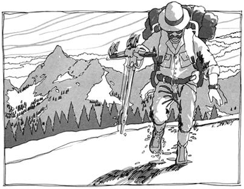 |
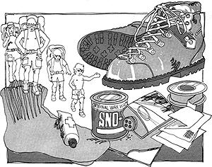 |
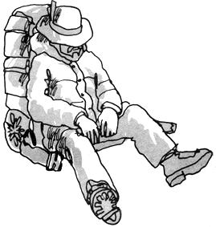 |
|
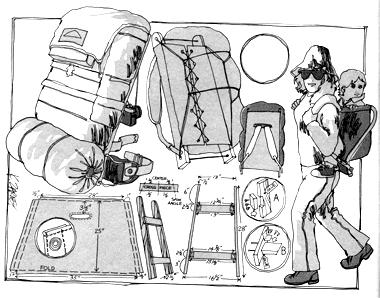 |
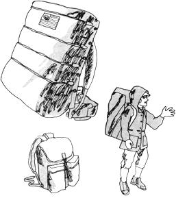 |
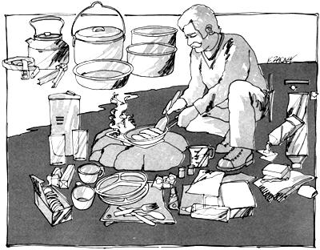 |
|
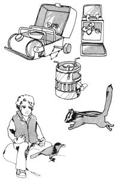 |
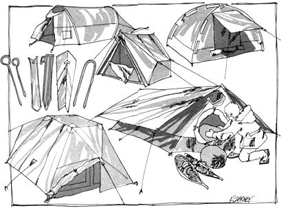 |
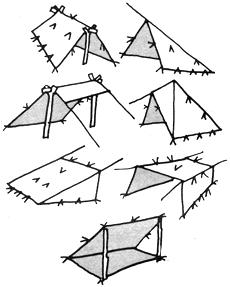 |
|
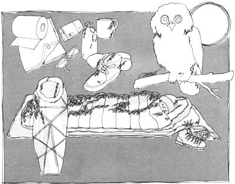 |
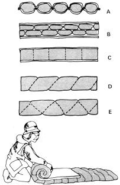 |
|